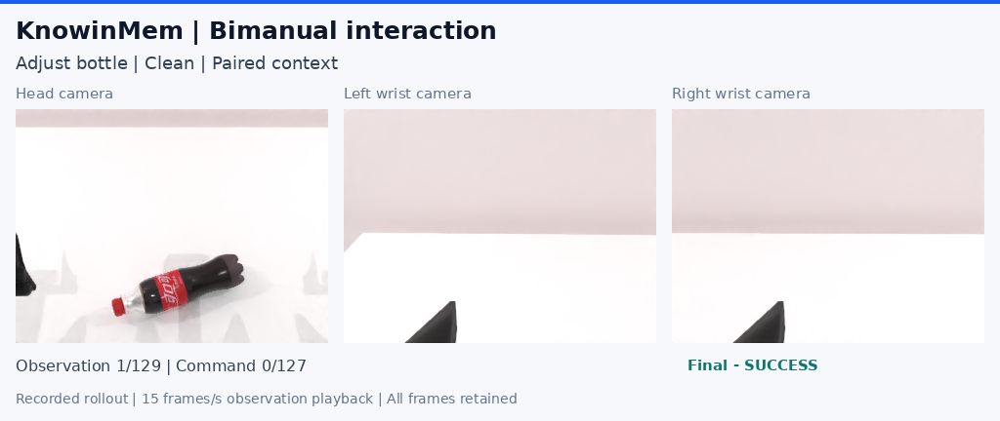

BIMANUAL ROLLOUTS / 2026.11.06
三相机视角下的
双臂行动
从瓶子的朝向，到锤头与积木的接触，再到彩色方块的位置关系：将双臂操作展开为连贯的观察、决策和动作。

01 / 从三个视角看同一次执行
五段视频记录配对上下文策略在 RoboTwin 中的闭环执行。主视角呈现场景和双臂姿态，左右腕相机保留各自的局部视野。画面同时标注动作命令与策略调用进度，便于观察一次动作分块如何连接到下一次决策。
观看瓶子姿态调整时，可以沿着接近、接触和姿态变化观察操作；锤击案例可以对照主视角中的工具运动与腕部画面中的接触区域；方块排序则连接物体关系与连续的抓取动作。
02 / 连续呈现首批五条轨迹
展示集合取首个完整验收的 100 例配对上下文分片中原序前五例，按任务目录顺序呈现。每段保留全部观测帧和任务判定器给出的终局，具体信息如下。
| 任务 | 场景 | 动作命令 | 策略调用 | 终局 |
|---|---|---|---|---|
| 瓶子姿态调整 | Clean | 127 | 5 | 任务完成 |
| 瓶子姿态调整 | Randomized | 300 | 10 | 预算内未完成 |
| 锤击积木 | Clean | 109 | 4 | 任务完成 |
| 锤击积木 | Randomized | 300 | 10 | 预算内未完成 |
| 彩色方块排序 | Clean | 300 | 10 | 预算内未完成 |
03 / 按观测事件回放
五段视频共保留 1,143 帧观测，以每秒 15 帧播放，三路相机在同一记录时刻并列显示。回放时长由观测帧数决定；策略计算、仿真推进和数据读取的墙钟等待不计入视频时间。画面中的命令数用于追踪执行进度，观测帧数包含起始及终局记录。
每个模型共享 50 个任务、两种环境配置、每组 100 个专家准入布局，共 10,000 次执行。三模型共计 30,000 次条件执行，每例最多 10 次策略调用、每次 30 个动作命令，任务成功即停止。实验面板记录完整分片通过轨迹验收后的进度，完整评测按清洁与随机化场景分别汇总。
04 / 将数据、上下文与行动连起来
三种上下文策略沿用同一冻结底座与匹配训练条件。双臂演示将这一研究流程延伸到动作过程：读者可以从训练纪要了解支持的构造方式，再结合视频观察接触、运动和最终状态，并在实验面板跟踪后续执行。